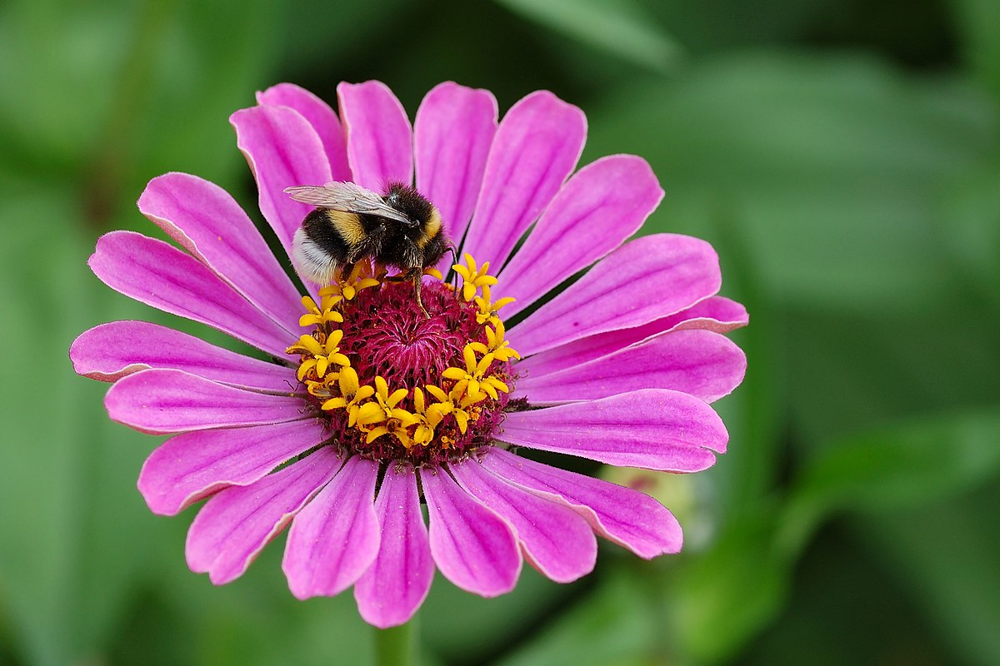

1+1=) [1] 2Quarto enables you to weave together content and executable code into a finished document. To learn more about Quarto see https://quarto.org. figura del fiore ape in Figura 3
1+1=) [1] 2When you click the Render button a document will be generated that includes both content and the output of embedded code. You can embed code like this:
1 + 1[1] 2You can add options to executable code like this
[1] 4The echo: false option disables the printing of code (only output is displayed).
Qui mettiamo un’immagine in Figura 1
knitr::include_graphics("img/iris_albicans (3).jpg").jpg)

Un Figura 2 imperatore vive mediamente 20 anni, anche se sono noti dei record di longevità di pinguini arrivati al quarantesimo anno di vita. Se sulle superfici di ghiaccio ha la caratteristica e buffa andatura che lo contraddistingue, in mare, grazie alla forma idrodinamica, “vola” letteralmente sott’acqua a una velocità di 40 km/h, immergendosi anche a profondità molto elevate e restando in apnea per 20 minuti.
library(ggplot2)
ggplot(rock,
aes(y=peri,x=shape, color =shape, size = peri)) + geom_point() +
theme_light() + theme(legend.position = "none") 
testo nella prima colonna fiorellino pinguino
Testo nella seconda colonna margherita bianca
Testo nella seconda colonna erba verde margherita bianca
Prima colonna più stretta della seconda dove parlo del mio grafico
Colonna più larga con il codice
Colonna più larga con il codice per ottenere il grafico
Descrizione del mio dataset
Primo tabset con una tabella contenente il dataset
Terzo tabset con il grafico dei dati
knitr::include_graphics("img/Zinnia_elegans_with_Bombus_01.JPG")